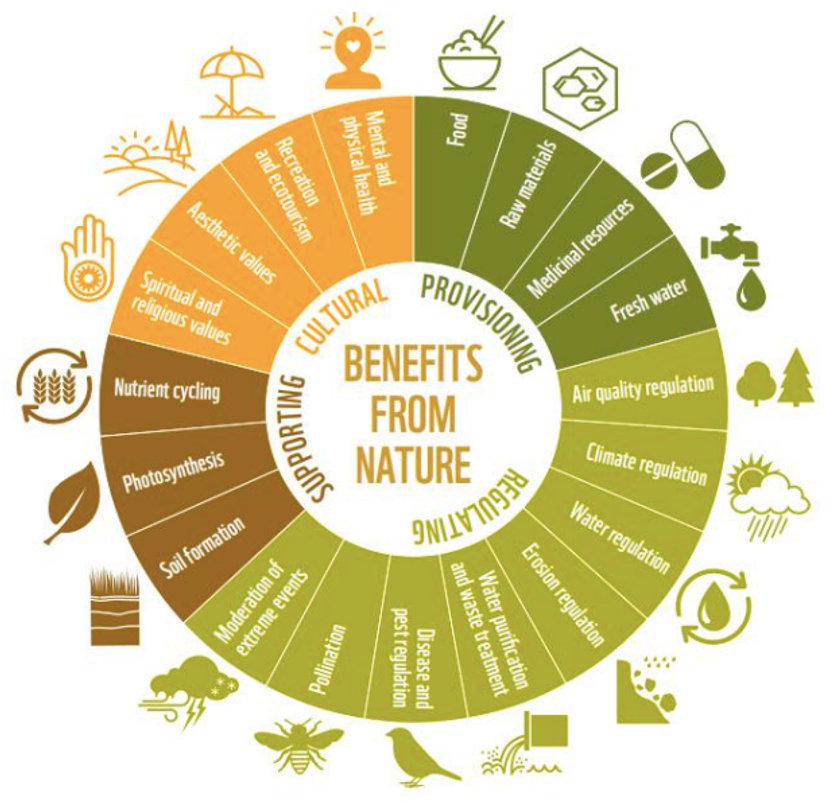
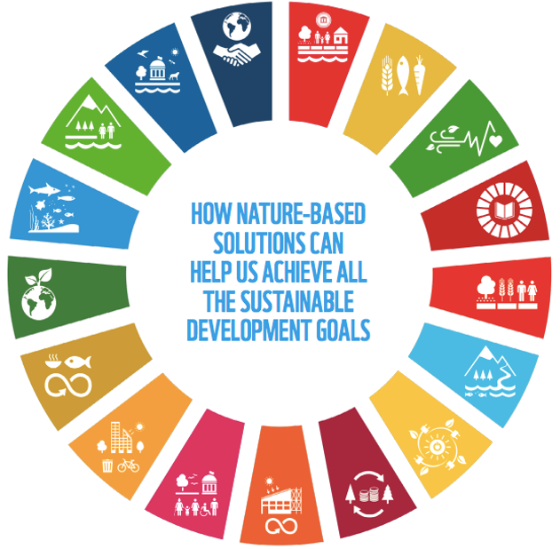
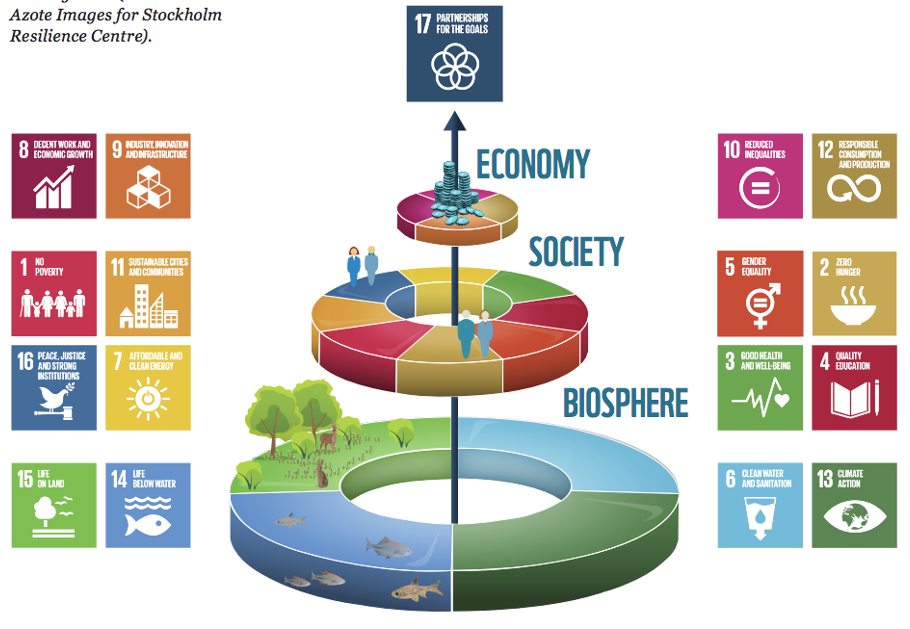
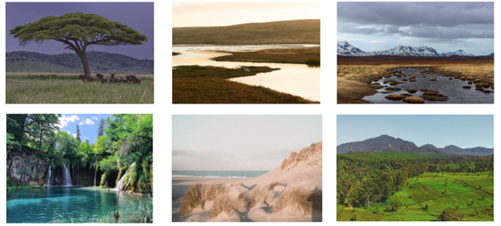
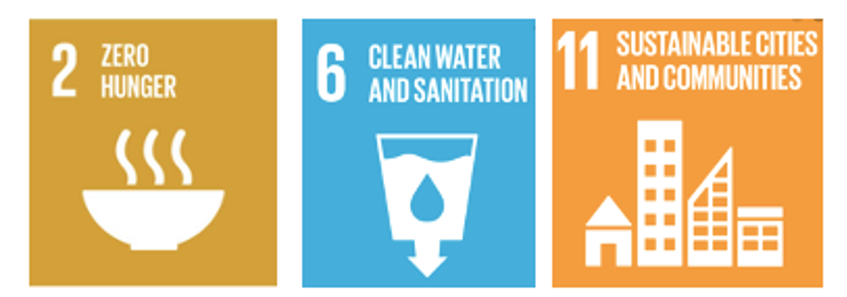
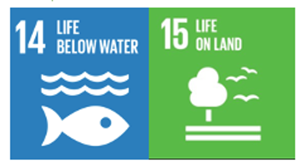
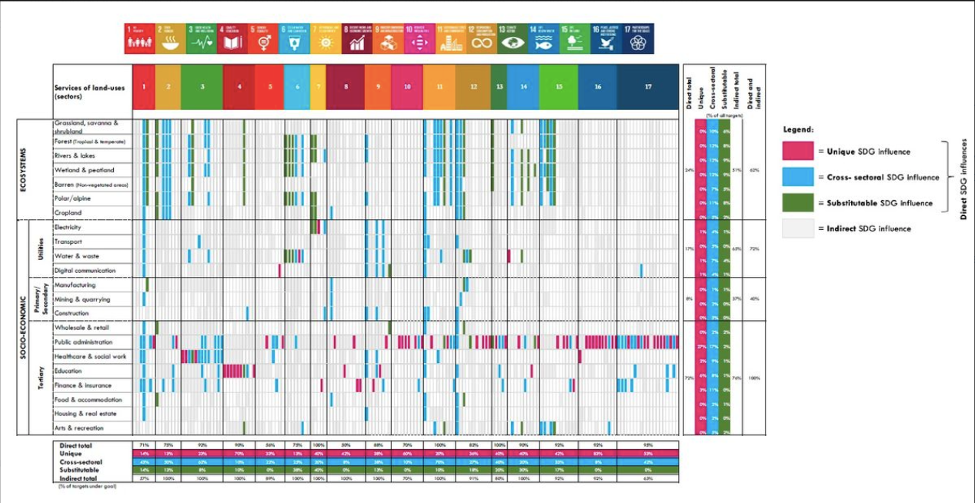

This mini-lecture introduces the concept of ‘ecosystem services’ and considers how these services link to the Sustainable Development Goals (SDG) targets. The mini-lecture shows how different ecosystems (forests and non-forests) can directly and indirectly influence SDG targets, and introduces a framework to help decision-makers understand the ways in which nature-based solutions (NbS) can influence development outcomes.
Describe the concept of ecosystem services and give examples of the multiple ways in which nature can influence the targets of the SDGs
Differentiate between direct and indirect influences of nature on the SDGs and recall examples
Recall how nature may provide substitutable, unique or complementary influences.
Natural and semi-natural ecosystems, including grasslands, forests, wetlands, dune systems and reefs, provide ecosystem services which support positive societal, environmental and economic outcomes (Fuldauer et al. 2021; Blicharska et al. 2019). Through the delivery of these services, ecosystems underpin the functioning and well-being of societies, the economy and the environment (Kapos et al. 2019; Faivre et al. 2017). As such, the management of ecosystems can contribute to, or undermine, progress on the United Nations’ Sustainable Development Goals (SDGs) (Wood et al. 2018; Dasgupta 2020; Seddon et al. 2021).

Figure 15.2.1: Examples of ecosystem services provided by nature (World Wildlife Fund 2018)
In order to understand how ecosystems can be leveraged to support the achievement of the SDGs and SDG targets, it necessitates an understanding of what services different ecosystems can provide.
A number of classifications of ecosystem services have been developed. These include TEEB (The Economics of Ecosystems and Biodiversity), MEA (Millennium Ecosystem Assessment), CICES (The Common International Classification of Ecosystem Services) and IPBES (Intergovernmental Science-Policy Platform on Biodiversity and Ecosystem Services). Ecosystem services are typically classified according to four categories: provisioning, regulating, supporting and cultural (see Table 15.2.1).
Table 15.2.1: Examples of ecosystem services
| Category | Ecosystem Service Examples |
|---|---|
| Provisioning | Food, freshwater, habitat, medicinal resources, timber |
| Regulating | Purification of water and maintenance of water quality, regulation of air quality, pest and disease control, nutrient cycling, waste recycling, wave dissipation, buffering against extreme events, pollination, provision of firebreaks, climate regulation, maintenance of ecological stability, sediment storage and transport, purification of the environment, stabilisation of sediments and regulation of soil erosion, filtering of contaminants, regulation of water flows, carbon sequestration, protective services |
| Supporting | Biodiversity, soil formation, primary production |
| Cultural | Cultural and natural heritage, recreation, intellectual and inspirational activities, ecotourism, traditional lifestyles, health and well-being, green space, value for scientific research, aesthetic value/scenic beauty, spiritual appreciation, preservation of traditional lifestyles, educational resources, passive use value |
It is important to note that different ecosystems can provide the same service. For example, although forests have received attention for carbon sequestration, peatlands and coastal ecosystems (e.g. mangroves, seagrass) also provide carbon sequestration services. Equally, flood mitigation can be provided by multiple ecosystems, such as inland and coastal wetlands, as well as forests. Understanding this will be important for later on in the course, when we consider how ecosystems can be integrated into infrastructure systems and climate adaptation.
In 2015, the United Nations established the 2030 Agenda for Sustainable Development with the aim of eradicating extreme poverty, reducing inequality and protecting the planet (United Nations 2015). The 2030 Agenda highlights the importance of biodiversity and the functioning of ecosystems to maintain economic activities and societal well-being. For example, within the preamble, nations commit to “protect the planet from degradation, including through sustainable consumption and production, sustainably managing its natural resources and taking urgent action on climate change, so that it can support the needs of the present and future generations.”

Figure 15.2.2: Nature-based solutions underpin all the Sustainable Development Goals (World Wide Fund For Nature (WWF) 2020)
The SDGs explicitly make reference to ecosystems in SDG 14 (‘life below water’) and SDG 15 (‘life on land’), which contain specific targets aimed to reduce threats to biodiversity, protect ecosystem functions, and support the flows of services to people (World Wildlife Fund 2018).
However, different ecosystems can contribute to the achievement of a wider range of SDGs and related targets by providing ecosystem services which generate various additional social, economic and environmental benefits (United Nations Water 2018). For example, the FAO (FAO 2011) reports that 1.6 billion people, including 60 million indigenous people, directly depend on natural ecosystems for their livelihoods. Equally, the 2020 World Economic Forum (WEF) Global Risk Report identified that the top risks to society and the economy are related to environmental risks, including biodiversity loss, water crises and climate impacts (World Economic Forum 2020; WWF Brief 2019).

Figure 15.2.3: Natural ecosystems, through the provision of ecosystem services, underpin the three pillars of the Sustainable Development Goals: societies, economies and the environment (World Wildlife Fund 2018).
The extent to which nature can influence the SDGs can be understood through analysis of nature’s influence on the SDG targets.
Building upon the research outlined in mini-lecture 1.3, which explored the potential for engineered infrastructure sectors to influence the SDG targets, a study by Fuldauer et al. (2021) has developed a framework for understanding the potential for different natural and semi-natural ecosystems to influence the SDG targets:
Direct influences: Identified where an ecosystem service (as described in the relevant ecosystem service classification), is directly mentioned or described in the SDG target, following the definition of Thacker et al. (2019). For example, target 11.6 “By 2030, reduce the adverse per capita environmental impact of cities, including by paying special attention to air quality and municipal and other waste management” is directly influenced by the ‘purification of air’ services provided by ecosystems.
Indirect influences: Identified where an ecosystem service is not described specifically in the target, but where evidence demonstrates that increasing the quantity or quality of the service can enhance achievement of the target. For example, target 4.1 “By 2030, ensure that all girls and boys complete free, equitable and quality primary and secondary education leading to relevant and effective learning outcomes” can be indirectly influenced by nature, as there is evidence that improving the quality or quantity of nature’s freshwater supply, as well as its climate adaptation services that reduce the urban heat effect, can improve school attendance and educational outcomes (Blicharska et al. 2019) and thereby support achievement of the target.
Through implementing NbS, and restoring, protecting, sustainably managing or creating new ecosystems, practitioners can enhance the quality or quantity of ecosystem services provided in order to help progress the SDGs.

Figure 15.2.4: The study by Fuldauer et al. (2021) looked at seven ecosystem categories (from left to right): grasslands, savannas & shrublands; wetlands & peatlands; polar alpine (tundra); rivers & lakes; beaches & dunes; croplands; forests (not shown). Photographs from Unsplash Images (Photographers: Etienne Steenkamp, Nils Leonhardt, Viktoria Spokojna, Maria Prusik, Chantal Kemp, Devon Daniel)
Fuldauer et al. (2021) undertook a systematic analysis and found that natural environments directly influence 40 out of the 169 SDG targets (25%) across 14 of the 17 SDG goals. This pervasive role is attributed to the diversity of ecosystem services that natural environments provide, including the provisioning of food, water, protective services, purification of the environment, recreation and heritage services.

Figure 15.2.5: Natural environments were found to directly contribute to 63% of targets under SDG 6 (‘clean water’), 60% of targets under SDG 11 (‘sustainable cities’), 50% of targets under SDG 2 (‘zero hunger’) and to targets under six further SDGs (Fuldauer et al. 2021).

Figure 15.2.6: Natural ecosystems are only explicitly referenced under SDG 14 and SDG 15, and directly underpin 40% and 42% of targets under each, respectively (Fuldauer et al. 2021).
Beyond SDG 14 and 15, nature directly influences targets under 12 different SDGs, which implies that projects that leverage nature can have much wider influence on the SDGs.
The study found that ecosystems indirectly influence 67 SDG targets across all 17 SDGs. Awareness of indirect SDG influences is critical for decision-makers to leverage nature for positive social, environmental and economic outcomes to deliver more broadly on the SDGs.
Natural sectors can also provide services which are globally non-substitutable by built infrastructure in safeguarding well-being – for example, ecosystems provide air purification as well as natural heritage services that are globally non-substitutable in their contributions to targets under SDG 11.

Figure 15.2.7: The framework developed by Fuldauer et al. (2021) shows the potential for different natural ecosystems to influence the SDGs. This framework will be introduced and used in Hands-on 9.
However, the tendency for nature to be highly context-specific suggests that in practice, ecological suitability of different ecosystems to deliver an ecosystem service will vary, and their potential to provide positive influences on the SDG targets will also vary, and likely involve trade-offs with other targets. The case of eucalyptus forest implementation is a widely cited example of where natural ecosystems can lead to unintended negative consequences, and thus potentially undermine achievement of the SDGs.
Table 15.2.2: Examples of how nature broadly underpins the different SDGs. Note, examples are not categorised by direct or indirect. Direct and indirect influences will be shown in Hands-on 9.
| SDG | Examples of NbS and ecosystem services underpinning the goal |
|---|---|
| SDG 1 – no poverty |
|
| SDG 2 – zero hunger |
|
| SDG 3 – good health and wellbeing |
|
| SDG 4 – quality education |
|
| SDG 5 – gender equality |
|
| SDG 6 – clean water and sanitation |
|
| SDG 7 – affordable and clean energy |
|
| SDG 8 – Decent work and economic growth |
|
| SDG 9 – industry, innovation and infrastructure |
|
| SDG 10 – reduced inequalities |
|
| SDG 11 – sustainable cities and communities |
|
| SDG 12 – responsible consumption and production |
|
| SDG 13 – climate action |
|
| SDG 14 – life below water |
|
| SDG 15 – life on land |
|
| SDG 16 – peace, justice and strong institutions |
|
| SDG 17 – partnerships for the goals |
|
The study undertaken by Fuldauer et al. (2021) has provided a granular identification of the links between nature and the SDGs. The tool developed throughout the study can be used as a framework to understand the potential of ecosystems in progressing the SDGs. A step-by-step walkthrough of the tool is available in Hands-on 9.
Within the tool, practitioners are able to compare the ways in which nature can be leveraged to influence SDG targets. SDG targets are described in terms of a single sector’s service only (unique influence), multiple sectors’ services (cross-sectoral) or services that can be substituted by a different sector (substitutable). By understanding where multiple ecosystems can provide the same service (substitute), decision-makers have a choice of how to progress on target achievement. For example, water ecosystems, forests and wetlands provide services that are substitutable in achieving 10%, 8% and 8% of all SDG targets, respectively. It is useful to understand the degree to which services can be provided by different ecosystems, given the large focus on forests and the need to protect native ecosystems.
The tool enables decision-makers to compare SDG influences between ecosystems and the built environment (e.g. energy, water). When comparing ecosystem and built environments, 12% of all SDG targets can be progressed by services provided by either built or natural infrastructure sectors. This provides a foundation for understanding the potential for nature to substitute or complement services provided by engineered infrastructure, which will be important for when we explore how NbS can be integrated into built infrastructure sectors for progressing on the SDGs.
Nature directly or indirectly underpins all SDGs through the provision of ecosystem services. Understanding the types of influences of nature on the SDG targets can help decision-makers identify how best to leverage nature to progress the SDGs. The ‘nature-SDG’ tool can be used to explore potential influences. Given the tendency of nature to be context-specific, it is important to note that the framework analyses potential ecosystem services and potential influences on SDG targets. The ability of a particular ecosystem to deliver the service and progress any SDG target is dependent upon the wider landscape and local context (see Lecture 18).